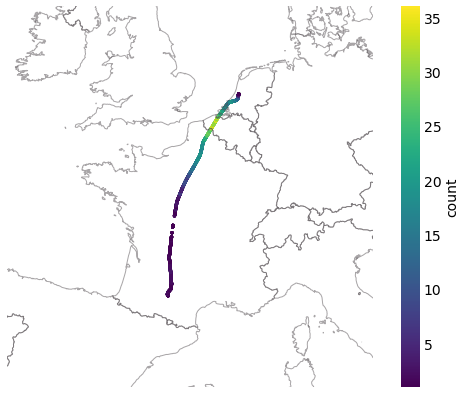

../data/opensky_cache
How to access ADS-B data from OpenSky history database?¶
For more advanced request or a dig in further history, you may be eligible for an direct access to the history database through their Impala shell.
Warning
OpenSky data are subject to particular terms of use. In particular, if you plan to use data for commercial purposes, you should mention it when you ask for access
Provided functions are here to help:
build appropriate and efficient requests without any SQL knowledge;
split requests efficiently and store intermediary results in cache files;
parse results with pandas and wrap results in appropriate data structures.
The first thing to do is to put your credentials in you configuration file. Edit the following lines to your configuration file.
[opensky]
username =
password =
You can check the path to your configuration file here. The path is different according to OS versions so do not assume anything and check the contents of the variable.
>>> import traffic
>>> traffic.config_file
PosixPath('/home/xo/.config/traffic/traffic.conf')
Historical traffic data¶
- Impala.history(start, stop=None, *args, date_delta=datetime.timedelta(seconds=3600), return_flight=False, callsign=None, icao24=None, serials=None, bounds=None, departure_airport=None, arrival_airport=None, airport=None, count=False, cached=True, limit=None, other_tables='', other_params='', nautical_units=True, time_buffer=None, progressbar=True)¶
Get Traffic from the OpenSky Impala shell.
You may pass requests based on time ranges, callsigns, aircraft, areas, serial numbers for receivers, or airports of departure or arrival.
The method builds appropriate SQL requests, caches results and formats data into a proper pandas DataFrame. Requests are split by hour (by default) in case the connection fails.
- Parameters
start (
Union[str,Real,datetime,Timestamp]) – a string (default to UTC), epoch or datetime (native Python or pandas)stop (
Union[str,Real,datetime,Timestamp,None]) – a string (default to UTC), epoch or datetime (native Python or pandas), by default, one day after startdate_delta (
timedelta) – a timedelta representing how to split the requests, by default: per hourreturn_flight (
bool) – returns a Flight instead of a Traffic structure if switched to True
More arguments to filter resulting data:
- Parameters
callsign (
Union[None,str,Iterable[str]]) – a string or a list of strings (wildcards accepted, _ for any character, % for any sequence of characters);icao24 (
Union[None,str,Iterable[str]]) – a string or a list of strings identifying the transponder code of the aircraft;serials (
Union[None,int,Iterable[int]]) – an integer or a list of integers identifying the sensors receiving the data;bounds (
Union[None,BaseGeometry,Tuple[float,float,float,float]]) – sets a geographical footprint. Either an airspace or shapely shape (requires the bounds attribute); or a tuple of float (west, south, east, north);
Airports
The following options build more complicated requests by merging information from two tables in the Impala database, resp.
state_vectors_data4andflights_data4.- Parameters
departure_airport (
Optional[str]) – a string for the ICAO identifier of the airport. Selects flights departing from the airport between the two timestamps;arrival_airport (
Optional[str]) – a string for the ICAO identifier of the airport. Selects flights arriving at the airport between the two timestamps;airport (
Optional[str]) – a string for the ICAO identifier of the airport. Selects flights departing from or arriving at the airport between the two timestamps;
Warning
See opensky.flightlist if you do not need any trajectory information.
If both departure_airport and arrival_airport are set, requested timestamps match the arrival time;
If airport is set, departure_airport and arrival_airport cannot be specified (a RuntimeException is raised).
Useful options for debug
- Parameters
count (
bool) – (default: False) add a column stating how many sensors received each record;nautical_units (
bool) – (default: True) convert data stored in Impala to standard nautical units (ft, ft/min, knots).time_buffer (
Union[None,str,Timedelta]) – (default: None) time buffer used to extend time bounds for flights in the OpenSky flight tables: requests will get flights betweenstart - time_bufferandstop + time_buffer. If no airport is specified, the parameter is ignored.cached (
bool) – (default: True) switch to False to force a new request to the database regardless of the cached files. This option also deletes previous cache files;limit (
Optional[int]) – maximum number of records requested, LIMIT keyword in SQL.
- Return type
Examples of requests¶
First, the opensky instance parses your configuration file upon import:
from traffic.data import opensky
Then you may send requests:
based on callsign:
flight = opensky.history( "2017-02-05 15:45", stop="2017-02-05 16:45", callsign="EZY158T", # returns a Flight instead of a Traffic return_flight=True ) flight
Flight
- callsign: EZY158T
- aircraft:
406d95· 🇬🇧 G-EZOP (A320) - start: 2017-02-05 15:45:00+00:00
- stop: 2017-02-05 16:44:59+00:00
- duration: 0 days 00:59:59
- sampling rate: 1 second(s)
based on bounding box:
# two hours of traffic over LFBB FIR t_lfbb = opensky.history( "2018-10-01 11:00", "2018-10-01 13:00", bounds=eurofirs['LFBB'] )
based on airports and callsigns (with wildcard):
# Airbus test flights from and to Toulouse airport t_aib = opensky.history( "2019-11-01 09:00", "2019-11-01 12:00", departure_airport="LFBO", arrival_airport="LFBO", callsign="AIB%", )
based on (own?) receiver’s identifier:
t_sensor = opensky.history( "2019-11-11 10:00", "2019-11-11 12:00", serials=1433801924, )
with information about coverage:
from cartes.crs import EuroPP, PlateCarree from traffic.drawing import countries flight = opensky.history( "2018-06-11 15:00", "2018-06-11 17:00", callsign="KLM1308", count=True, return_flight=True, )
import matplotlib.pyplot as plt with plt.style.context("traffic"): fig, ax = plt.subplots(subplot_kw=dict(projection=EuroPP())) ax.add_feature(countries()) ax.set_extent((-7, 13, 40, 55)) ax.spines["geo"].set_visible(False) # no specific method for that in traffic # but switch back to pandas DataFrame for manual plot flight.data.plot.scatter( ax=ax, x="longitude", y="latitude", c="count", transform=PlateCarree(), s=5, cmap="viridis", )

Extended Mode-S (EHS)¶
EHS messages are not automatically decoded for you in the OpenSky Database but you may access them and decode them from your computer.
Warning
Some examples here may be outdated. To our knowledge at this time, only EHS data after January 1st 2020 are available!
Tip
Flight.query_ehs() messages also takes a dataframe argument to avoid
making possibly numerous requests to the Impala database.- Impala.extended(*args, **kwargs)¶
Get raw message from the OpenSky Impala shell.
You may pass requests based on time ranges, callsigns, aircraft, areas, serial numbers for receivers, or airports of departure or arrival.
The method builds appropriate SQL requests, caches results and formats data into a proper pandas DataFrame. Requests are split by hour (by default) in case the connection fails.
- Parameters
start (
Union[str,Real,datetime,Timestamp]) – a string (default to UTC), epoch or datetime (native Python or pandas)stop (
Union[None,str,Real,datetime,Timestamp]) – a string (default to UTC), epoch or datetime (native Python or pandas), by default, one day after startdate_delta (
timedelta) – a timedelta representing how to split the requests, by default: per hour
More arguments to filter resulting data:
- Parameters
callsign (
UnionType[None,str,list[str]]) – a string or a list of strings (wildcards accepted, _ for any character, % for any sequence of characters);icao24 (
Union[None,str,Iterable[str]]) – a string or a list of strings identifying the transponder code of the aircraft;serials (
Union[None,int,Iterable[int]]) – an integer or a list of integers identifying the sensors receiving the data;bounds (
Union[None,BaseGeometry,Tuple[float,float,float,float]]) – sets a geographical footprint. Either an airspace or shapely shape (requires the bounds attribute); or a tuple of float (west, south, east, north);
Airports
The following options build more complicated requests by merging information from two tables in the Impala database, resp.
rollcall_replies_data4andflights_data4.- Parameters
departure_airport (
UnionType[None,str]) – a string for the ICAO identifier of the airport. Selects flights departing from the airport between the two timestamps;arrival_airport (
UnionType[None,str]) – a string for the ICAO identifier of the airport. Selects flights arriving at the airport between the two timestamps;airport (
UnionType[None,str]) – a string for the ICAO identifier of the airport. Selects flights departing from or arriving at the airport between the two timestamps;
Warning
If both departure_airport and arrival_airport are set, requested timestamps match the arrival time;
If airport is set, departure_airport and arrival_airport cannot be specified (a RuntimeException is raised).
It is not possible at the moment to filter both on airports and on geographical bounds (help welcome!).
Useful options for debug
- Parameters
- Return type
Examples of requests¶
based on transponder identifier (icao24):
from traffic.data.samples import belevingsvlucht df = opensky.extended( belevingsvlucht.start, belevingsvlucht.stop, icao24=belevingsvlucht.icao24 ) enriched = belevingsvlucht.query_ehs(df)
based on geographical bounds:
from traffic.data import eurofirs from traffic.data.samples import switzerland df = opensky.extended( switzerland.start_time, switzerland.end_time, bounds=eurofirs['LSAS'] ) enriched_ch = ( switzerland .filter() .query_ehs(df) .resample('1s') .eval(desc='', max_workers=4) )
based on airports, together with traffic:
schiphol = opensky.history( "2019-11-11 12:00", "2019-11-11 14:00", airport="EHAM" ) df = opensky.extended( "2019-11-11 12:00", "2019-11-11 14:00", airport="EHAM" ) enriched_eham = ( schiphol .filter() .query_ehs(df) .resample('1s') .eval(desc='', max_workers=4) )
Flight list by airport¶
- Impala.flightlist(start, stop=None, *args, departure_airport=None, arrival_airport=None, airport=None, callsign=None, icao24=None, cached=True, limit=None, progressbar=True)¶
Lists flights departing or arriving at a given airport.
You may pass requests based on time ranges, callsigns, aircraft, areas, serial numbers for receivers, or airports of departure or arrival.
The method builds appropriate SQL requests, caches results and formats data into a proper pandas DataFrame. Requests are split by hour (by default) in case the connection fails.
- Parameters
More arguments to filter resulting data:
- Parameters
departure_airport (
Union[None,str,list[str]]) – a string for the ICAO identifier of the airport. Selects flights departing from the airport between the two timestamps;arrival_airport (
Union[None,str,list[str]]) – a string for the ICAO identifier of the airport. Selects flights arriving at the airport between the two timestamps;airport (
Union[None,str,list[str]]) – a string for the ICAO identifier of the airport. Selects flights departing from or arriving at the airport between the two timestamps;callsign (
Union[None,str,list[str]]) – a string or a list of strings (wildcards accepted, _ for any character, % for any sequence of characters);icao24 (
Union[None,str,list[str]]) – a string or a list of strings identifying the transponder code of the aircraft;
Warning
If both departure_airport and arrival_airport are set, requested timestamps match the arrival time;
If airport is set,
departure_airportandarrival_airportcannot be specified (a RuntimeException is raised).
Useful options for debug
Requests for raw data¶
- Impala.rawdata(start, stop=None, *args, table_name=None, date_delta=datetime.timedelta(seconds=3600), icao24=None, serials=None, bounds=None, callsign=None, departure_airport=None, arrival_airport=None, airport=None, cached=True, limit=None, other_tables='', other_columns=None, other_params='', progressbar=True)¶
Get raw message from the OpenSky Impala shell.
You may pass requests based on time ranges, callsigns, aircraft, areas, serial numbers for receivers, or airports of departure or arrival.
The method builds appropriate SQL requests, caches results and formats data into a proper pandas DataFrame. Requests are split by hour (by default) in case the connection fails.
- Parameters
start (
Union[str,Real,datetime,Timestamp]) – a string (default to UTC), epoch or datetime (native Python or pandas)stop (
Union[str,Real,datetime,Timestamp,None]) – a string (default to UTC), epoch or datetime (native Python or pandas), by default, one day after startdate_delta (
timedelta) – a timedelta representing how to split the requests, by default: per hour
More arguments to filter resulting data:
- Parameters
callsign (
Union[None,str,list[str]]) – a string or a list of strings (wildcards accepted, _ for any character, % for any sequence of characters);icao24 (
Union[None,str,Iterable[str]]) – a string or a list of strings identifying the transponder code of the aircraft;serials (
Union[None,int,Iterable[int]]) – an integer or a list of integers identifying the sensors receiving the data;bounds (
Union[None,BaseGeometry,Tuple[float,float,float,float]]) – sets a geographical footprint. Either an airspace or shapely shape (requires the bounds attribute); or a tuple of float (west, south, east, north);
Airports
The following options build more complicated requests by merging information from two tables in the Impala database, resp.
rollcall_replies_data4andflights_data4.- Parameters
departure_airport (
Optional[str]) – a string for the ICAO identifier of the airport. Selects flights departing from the airport between the two timestamps;arrival_airport (
Optional[str]) – a string for the ICAO identifier of the airport. Selects flights arriving at the airport between the two timestamps;airport (
Optional[str]) – a string for the ICAO identifier of the airport. Selects flights departing from or arriving at the airport between the two timestamps;
Warning
If both departure_airport and arrival_airport are set, requested timestamps match the arrival time;
If airport is set, departure_airport and arrival_airport cannot be specified (a RuntimeException is raised).
It is not possible at the moment to filter both on airports and on geographical bounds (help welcome!).
Useful options for debug
- Parameters
- Return type
Custom requests¶
- Impala.request(request_pattern, start, stop, *args, columns, date_delta=datetime.timedelta(seconds=3600), cached=True, progressbar=True)¶
Splits and sends a custom request.
- Parameters
request_pattern (
str) – a string containing the basic request you wish to make on Impala shell. Use {before_hour} and {after_hour} place holders to write your hour constraints: they will be automatically replaced by appropriate values.start (
Union[str,Real,datetime,Timestamp]) – a string (default to UTC), epoch or datetime (native Python or pandas)stop (
Union[str,Real,datetime,Timestamp]) – a string (default to UTC), epoch or datetime (native Python or pandas), by default, one day after startcolumns (
list[str]) – the list of expected columns in the result. This helps naming the columns in the resulting dataframe.date_delta (
timedelta) – a timedelta representing how to split the requests, by default: per hourcached (
bool) – (default: True) switch to False to force a new request to the database regardless of the cached files; delete previous cache files;
- Return type